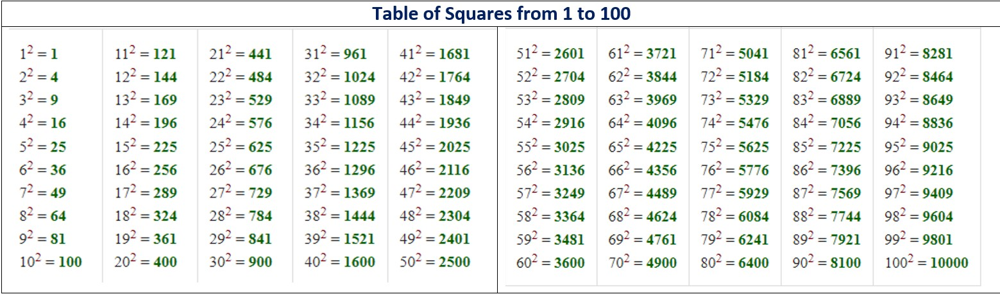
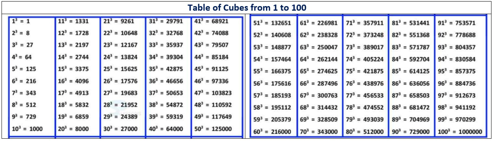
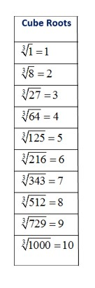

In mathematics, a square number or perfect square is an integer that is the square of an integer; in other words, it is the product of some integer with itself. For example, 9 is a square number, since it can be written as 3 × 3.
In mathematics, a square root of a number x is a number y such that y2 = x; in other words, a number y whose square (the result of multiplying the number by itself, or y ⋅ y) is x. For example, 4 and −4 are square roots of 16, because 42 = (−4)2 = 16.

In mathematics, the cube of a number n is its third power, that is, the result of multiplying three instances of n together. The cube of a number or any other mathematical expression is denoted by a superscript 3, for example 23 = 8 or (x + 1)3.
In mathematics, a cube root of a number x is a number y such that y³ = x.All nonzero real numbers, have exactly one real cube root and a pair of complex conjugate cube roots, and all nonzero complex numbers have three distinct complex cube roots.
